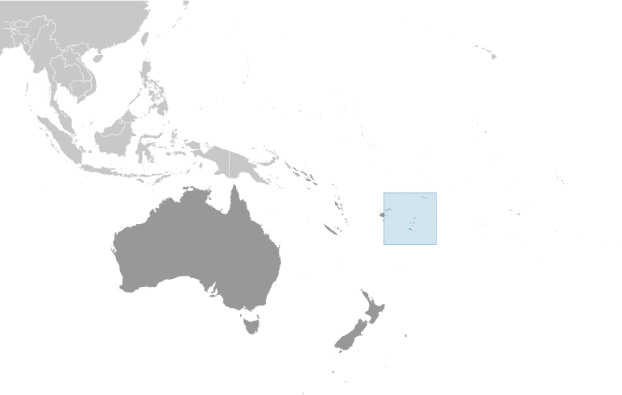
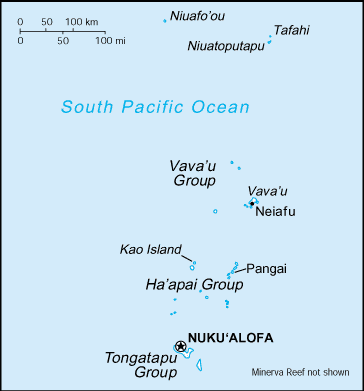
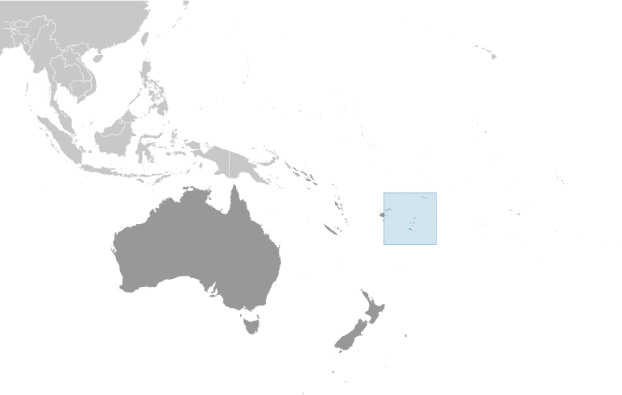
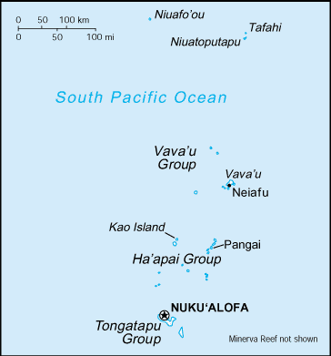

Australia-Oceania :: TONGA
Introduction :: TONGA
-
Tonga - unique among Pacific nations - never completely lost its indigenous governance. The archipelagos of "The Friendly Islands" were united into a Polynesian kingdom in 1845. Tonga became a constitutional monarchy in 1875 and a British protectorate in 1900; it withdrew from the protectorate and joined the Commonwealth of Nations in 1970. Tonga remains the only monarchy in the Pacific.
Geography :: TONGA
-
Oceania, archipelago in the South Pacific Ocean, about two-thirds of the way from Hawaii to New Zealand20 00 S, 175 00 WOceaniatotal: 747 sq kmland: 717 sq kmwater: 30 sq kmcountry comparison to the world: 190four times the size of Washington, DC0 km419 kmterritorial sea: 12 nmexclusive economic zone: 200 nmcontinental shelf: 200-m depth or to the depth of exploitationtropical; modified by trade winds; warm season (December to May), cool season (May to December)mostly flat islands with limestone bedrock formed from uplifted coral formation; others have limestone overlying volcanic rockmean elevation: NAelevation extremes: lowest point: Pacific Ocean 0 mhighest point: Kao Volcano on Kao Island 1,046 mfish, arable landagricultural land: 43.1%arable land 22.2%; permanent crops 15.3%; permanent pasture 5.6%forest: 12.5%other: 44.4% (2011 est.)0 sq km (2012)over two-thirds of the population lives on the island of Tongatapu; only 45 of the nation's 171 islands are occupiedcyclones (October to April); earthquakes and volcanic activity on Fonuafo'ouvolcanism: moderate volcanic activity; Fonualei (180 m) has shown frequent activity in recent years, while Niuafo'ou (260 m), which last erupted in 1985, has forced evacuations; other historically active volcanoes include Late and Tofuadeforestation results as more and more land is being cleared for agriculture and settlement; some damage to coral reefs from starfish and indiscriminate coral and shell collectors; overhunting threatens native sea turtle populationsparty to: Biodiversity, Climate Change, Climate Change-Kyoto Protocol, Desertification, Law of the Sea, Marine Dumping, Marine Life Conservation, Ozone Layer Protection, Ship Pollutionsigned, but not ratified: none of the selected agreementsarchipelago of 171 islands (45 inhabited)
People and Society :: TONGA
-
106,479 (July 2017 est.)country comparison to the world: 193noun: Tongan(s)adjective: TonganTongan 96.6%, part-Tongan 1.7%, other 1.7%, unspecified 0.03% (2006 est.)English and Tongan 87%, Tongan (official) 10.7%, English (official) 1.2%, other 1.1%, unspecified 0.03% (2006 est.)Protestant 64.9% (includes Free Wesleyan Church 37.3%, Free Church of Tonga 11.4%, Church of Tonga 7.2%, Tokaikolo Christian Church 2.6%, Assembly of God 2.3%, Seventh Day Adventist 2.2%, Constitutional Church of Tonga 0.9%, Anglican 0.8% and Full Gospel Church 0.2%), Mormon 16.8%, Roman Catholic 15.6%, other 1.1%, none 0.03%, unspecified 1.7% (2006 est.)0-14 years: 33.87% (male 18,323/female 17,741)15-24 years: 19.65% (male 10,715/female 10,209)25-54 years: 34.3% (male 18,243/female 18,278)55-64 years: 5.76% (male 3,048/female 3,083)65 years and over: 6.42% (male 3,090/female 3,749) (2017 est.)total dependency ratio: 74.2youth dependency ratio: 63.9elderly dependency ratio: 10.2potential support ratio: 9.8 (2015 est.)total: 23 yearsmale: 22.5 yearsfemale: 23.4 years (2017 est.)country comparison to the world: 175-0.05% (2017 est.)country comparison to the world: 20322.2 births/1,000 population (2017 est.)country comparison to the world: 704.9 deaths/1,000 population (2017 est.)country comparison to the world: 196-17.8 migrant(s)/1,000 population (2017 est.)country comparison to the world: 219over two-thirds of the population lives on the island of Tongatapu; only 45 of the nation's 171 islands are occupiedurban population: 23.9% of total population (2017)rate of urbanization: 1.3% annual rate of change (2015-20 est.)NUKU'ALOFA 25,000 (2014)at birth: 1.03 male(s)/female0-14 years: 1.03 male(s)/female15-24 years: 1.05 male(s)/female25-54 years: 1 male(s)/female55-64 years: 0.98 male(s)/female65 years and over: 0.84 male(s)/femaletotal population: 1.01 male(s)/female (2016 est.)24.9 yearsnote: median age at first birth among women 25-49 (2012 est.)124 deaths/100,000 live births (2015 est.)country comparison to the world: 68total: 11.3 deaths/1,000 live birthsmale: 11.7 deaths/1,000 live birthsfemale: 10.8 deaths/1,000 live births (2017 est.)country comparison to the world: 126total population: 76.4 yearsmale: 74.9 yearsfemale: 78.1 years (2017 est.)country comparison to the world: 873.1 children born/woman (2017 est.)country comparison to the world: 5134.1% (2012)5.2% of GDP (2014)country comparison to the world: 1330.56 physicians/1,000 population (2010)2.6 beds/1,000 population (2010)improved:urban: 99.7% of populationrural: 99.6% of populationtotal: 99.6% of populationunimproved:urban: 0.3% of populationrural: 0.4% of populationtotal: 0.4% of population (2015 est.)improved:urban: 97.6% of populationrural: 89% of populationtotal: 91% of populationunimproved:urban: 2.4% of populationrural: 11% of populationtotal: 9% of population (2015 est.)NANANAnote: active local transmission of Zika virus by Aedes species mosquitoes has been identified in this country (as of August 2016); it poses an important risk (a large number of cases possible) among US citizens if bitten by an infective mosquito; other less common ways to get Zika are through sex, via blood transfusion, or during pregnancy, in which the pregnant woman passes Zika virus to her fetus (2016)48.2% (2016)country comparison to the world: 71.9% (2012)definition: can read and write Tongan and/or Englishtotal population: 99.4%male: 99.3%female: 99.4% (2015 est.)
Government :: TONGA
-
conventional long form: Kingdom of Tongaconventional short form: Tongalocal long form: Pule'anga Fakatu'i 'o Tongalocal short form: Tongaformer: Friendly Islandsetymology: "tonga" means "south" in the Tongan language and refers to the country's geographic position in relation to central Polynesiaconstitutional monarchyname: Nuku'alofageographic coordinates: 21 08 S, 175 12 Wtime difference: UTC+13 (18 hours ahead of Washington, DC, during Standard Time)daylight saving time: +1hr, begins first Sunday in November; ends second Sunday in January5 island divisions; 'Eua, Ha'apai, Ongo Niua, Tongatapu, Vava'u4 June 1970 (from UK protectorate)Official Birthday of King TUPOU VI, 4 July (1959); note - actual birthday of the monarch is 12 July 1959; 4 July (2015) is the day the king was crowned; Constitution Day (National Day), 4 November (1875)adopted 4 November 1875, revised 1988; amended many times, last in 2014 (2016)English common lawhas not submitted an ICJ jurisdiction declaration; non-party state to the ICCtcitizenship by birth: nocitizenship by descent only: the father must be a citizen of Tonga; if a child is born out of wedlock, the mother must be a citizen of Tongadual citizenship recognized: yesresidency requirement for naturalization: 5 years21 years of age; universalchief of state: King TUPOU VI (since 18 March 2012); Heir Apparent Crown Prince Siaosi Manumataogo 'Alaivahamama'o 'Ahoeitu Konstantin Tuku'aho, son of the king (born 17 September 1985); note - on 18 March 2012, King George TUPOU V died and his brother, Crown Prince TUPOUTO'A Lavaka, assumed the throne as TUPOU VIhead of government: Interim Prime Minister 'Akilisi POHIVA (since 30 December 2014); note - King TUPOU VI dissolved the parliament on 26 August 2017cabinet: Cabinet nominated by the prime minister and appointed by the monarchelections/appointments: the monarchy is hereditary; prime minister and deputy prime minister indirectly elected by the Legislative Assembly and appointed by the monarch; election last held on 21 November 2014 (next to be held in November 2018)election results: 'Akilisi POHIVA (Democratic Party of the Friendly Islands) elected prime minister by parliament on 29 December 2014; vote - 15 of 26 votesnote: a Privy Council advises the monarchdescription: unicameral Legislative Assembly or Fale Alea (26 seats; 17 people's representatives directly elected in single-seat constituencies by simple majority vote and 9 indirectly elected by hereditary leaders; members serve 3-year terms)elections: last held on 27 November 2014 (next to be held on 16 November 2017); note - King TUPOU VI dissolved the parliament on 26 September 2017election results: percent of vote - NA; seats by party - Democratic Party 9, nobles' representatives 9, independent 8highest court(s): Court of Appeal (consists of the court president and a number of judges determined by the monarch); note - appeals beyond the Court of Appeal are brought before the King in Privy Council, the monarch's advisory organ that has both judicial and legislative powersjudge selection and term of office: judge appointments and tenures made by the King in Privy Council, judge appointments subject to consent of the Legislative Assemblysubordinate courts: Supreme Court; Magistrate's Courts; Land CourtsDemocratic Party of the Friendly Islands [Samuela 'Akilisi POHIVA]People's Democratic Party or PDP [Tesina FUKO]Sustainable Nation-Building Party [Sione FONUA]Tonga Democratic Labor PartyTonga Human Rights and Democracy Movement or THRDMHuman Rights and Democracy Movement Tonga or HRDMT [Rev. Simote VEA]Public Service Association or PSA [Finau TUTONE]ACP, ADB, AOSIS, C, FAO, G-77, IBRD, ICAO, ICRM, IDA, IFAD, IFC, IFRCS, IHO, IMF, IMO, IMSO, Interpol, IOC, IPU, ITU, ITUC (NGOs), OPCW, PIF, Sparteca, SPC, UN, UNCTAD, UNESCO, UNIDO, UPU, WCO, WHO, WIPO, WMO, WTOchief of mission: Ambassador Mahe'uli'uli Sandhurst TUPOUNIUA (since 17 September 2013)chancery: 250 E. 51st Street, New York, NY, 10022telephone: [1] (917) 369-1025FAX: [1] (917) 369-1024consulate(s) general: San Franciscothe US does not have an embassy in Tonga; the US Ambassador to Fiji is accredited to Tongared with a bold red cross on a white rectangle in the upper hoist-side corner; the cross reflects the deep-rooted Christianity in Tonga; red represents the blood of Christ and his sacrifice; white signifies purityred cross on white field, arms equal length; national colors: red, whitename: "Ko e fasi `o e tu"i `o e `Otu Tonga" (Song of the King of the Tonga Islands)lyrics/music: Uelingatoni Ngu TUPOUMALOHI/Karl Gustavus SCHMITTnote: in use since 1875; more commonly known as "Fasi Fakafonua" (National Song)
Economy :: TONGA
-
Tonga has a small, open island economy and is the last constitutional monarchy among the Pacific Island countries. It has a narrow export base in agricultural goods. Squash, vanilla beans, and yams are the main crops. Agricultural exports, including fish, make up two-thirds of total exports. Tourism is the second-largest source of hard currency earnings following remittances. Tonga had 53,800 visitors in 2015. The country must import a high proportion of its food, mainly from New Zealand.The country remains dependent on external aid and remittances from overseas Tongans to offset its trade deficit. The government is emphasizing the development of the private sector, encouraging investment, and is committing increased funds for health care and education. Tonga's English-speaking and educated workforce offer a viable labor market, and the tropical climate provides fertile soil. Renewable energy and deep-sea mining also offer opportunities for investment.Tonga has a reasonably sound basic infrastructure and well developed social services. The government faces high unemployment among the young, moderate inflation, pressures for democratic reform, and rising civil service expenditures.$560 million (2016 est.)$536 million (2015 est.)$512 million (2014 est.)note: data are in 2016 dollarscountry comparison to the world: 211$413 million (2016 est.)3.1% (2016 est.)3.5% (2015 est.)2.9% (2014 est.)country comparison to the world: 81$5,400 (2016 est.)$5,200 (2015 est.)$5,000 (2014 est.)note: data are in 2016 dollarscountry comparison to the world: 168household consumption: 101.1%government consumption: 20.1%investment in fixed capital: 25.8%investment in inventories: -3.5%exports of goods and services: 18.2%imports of goods and services: -61.7% (2016 est.)agriculture: 19.6%industry: 20.4%services: 60% (2016 est.)squash, coconuts, copra, bananas, vanilla beans, cocoa, coffee, sweet potatoes, cassava, taro and kavatourism, construction, fishing7.9% (2016 est.)country comparison to the world: 1933,800 (2011 est.)country comparison to the world: 202agriculture: 27.5%industry: 27.5%services: 2,006% (2006 est.)1.1% (2011 est.)1.1% (2006)country comparison to the world: 824% (FY03/04 est.)lowest 10%: NA%highest 10%: NA%revenues: $135.4 millionexpenditures: $135.4 million (2016 est.)33.6% of GDP (2016 est.)country comparison to the world: 630% of GDP (2016 est.)country comparison to the world: 4445.1% of GDP (2013)46.5% of GDP (2012)country comparison to the world: 1151 July - 30 June2.6% (2016 est.)-1.1% (2015 est.)country comparison to the world: 1337.9% (31 December 2016 est.)8.09% (31 December 2015 est.)country comparison to the world: 107$112.8 million (31 December 2016 est.)$101.8 million (31 December 2015 est.)country comparison to the world: 188$227.7 million (31 December 2016 est.)$203.9 million (31 December 2015 est.)country comparison to the world: 191$135.2 million (31 December 2016 est.)$128.4 million (31 December 2015 est.)country comparison to the world: 187$NA$-53 million (2016 est.)$-78.3 million (2015 est.)country comparison to the world: 69$19.4 million (2016 est.)$18.1 million (2015 est.)country comparison to the world: 212squash, fish, vanilla beans, root cropsHong Kong 25.6%, Japan 15.1%, NZ 14.3%, US 13.5%, Australia 10%, Philippines 9.4% (2016)$266.6 million (2016 est.)$261.7 million (2015 est.)country comparison to the world: 202foodstuffs, machinery and transport equipment, fuels, chemicalsNZ 35.3%, Fiji 12.1%, Singapore 9.3%, China 8.4%, US 8%, Australia 7.6%, Japan 4.3% (2016)$176.5 million (31 December 2016 est.)$156.1 million (31 December 2015 est.)country comparison to the world: 160$198.2 million (31 December 2016 est.)$173.3 million (31 December 2015 est.)country comparison to the world: 188$117.2 million (31 December 2016 est.)$110.2 million (31 December 2015 est.)country comparison to the world: 130pa'anga (TOP) per US dollar -2.2157 (2016 est.)2.216 (2015 est.)2.106 (2014 est.)1.847 (2013 est.)1.72 (2012 est.)
Energy :: TONGA
-
population without electricity: 5,325electrification - total population: 96%electrification - urban areas: 100%electrification - rural areas: 83% (2012)50 million kWh (2015 est.)country comparison to the world: 20746.5 million kWh (2015 est.)country comparison to the world: 2050 kWh (2016)country comparison to the world: 2030 kWh (2016 est.)country comparison to the world: 20817,000 kW (2015 est.)country comparison to the world: 20782.4% of total installed capacity (2015 est.)country comparison to the world: 810% of total installed capacity (2015 est.)country comparison to the world: 1910% of total installed capacity (2015 est.)country comparison to the world: 20817.6% of total installed capacity (2015 est.)country comparison to the world: 370 bbl/day (2016 est.)country comparison to the world: 2000 bbl/day (2014 est.)country comparison to the world: 1970 bbl/day (2014 est.)country comparison to the world: 1960 bbl (1 January 2017 es)country comparison to the world: 2000 bbl/day (2014 est.)country comparison to the world: 2011,500 bbl/day (2015 est.)country comparison to the world: 2000 bbl/day (2014 est.)country comparison to the world: 2021,457 bbl/day (2014 est.)country comparison to the world: 1960 cu m (2013 est.)country comparison to the world: 2010 cu m (2013 est.)country comparison to the world: 1360 cu m (2013 est.)country comparison to the world: 1930 cu m (2013 est.)country comparison to the world: 1940 cu m (1 January 2014 es)country comparison to the world: 199200,000 Mt (2013 est.)country comparison to the world: 205
Communications :: TONGA
-
total subscriptions: 11,000subscriptions per 100 inhabitants: 10 (July 2016 est.)country comparison to the world: 195total: 80,000subscriptions per 100 inhabitants: 75 (July 2016 est.)country comparison to the world: 197general assessment: competition between Tonga Telecommunications Corporation (TCC) and Digicel Tonga Limited is accelerating expansion of telecommunications; both parties provide high speed Internet, mobile telephone networks, and international telecom services; Digicel also holds a telecommunication license after its acquisition of TonFon (a subsidiary of former Shoreline Communications Tonga); submarine cable infrastructure, managed by Tonga Cable Limited, has also been brought to the country by Asian Development Bank and World Bank aiddomestic: combined fixed-line and mobile-cellular teledensity about 85 telephones per 100 persons; fully automatic switched networkinternational: country code - 676; satellite earth station - 1 Intelsat (Pacific Ocean) (2016)1 state-owned TV station and 3 privately owned TV stations; satellite and cable TV services are available; 1 state-owned and 3 privately owned radio stations; Radio Australia broadcasts available via satellite (2015).tototal: 42,552percent of population: 40.0% (July 2016 est.)country comparison to the world: 191
Transportation :: TONGA
-
number of registered air carriers: 1inventory of registered aircraft operated by air carriers: 1annual passenger traffic on registered air carriers: 75,416annual freight traffic on registered air carriers: 0 mt-km (2015)A3 (2016)6 (2013)country comparison to the world: 177total: 12,438 to 3,047 m: 1 (2013)total: 51,524 to 2,437 m: 1914 to 1,523 m: 3under 914 m: 1 (2013)total: 680 kmpaved: 184 kmunpaved: 496 km (2011)country comparison to the world: 191total: 7by type: cargo 4, carrier 1, passenger/cargo 2foreign-owned: 2 (Australia 1, UK 1) (2010)country comparison to the world: 123major seaport(s): Nuku'alofa, Neiafu, Pangai
Military and Security :: TONGA
-
Tonga Defense Services (TDS): Land Force (Royal Guard), Maritime Force (includes Royal Marines, Air Wing) (2013)16 years of age for voluntary enlistment (with parental consent); no conscription; the king retains the right to call up "all those capable of bearing arms" in wartime (2012)
Transnational Issues :: TONGA
-
none